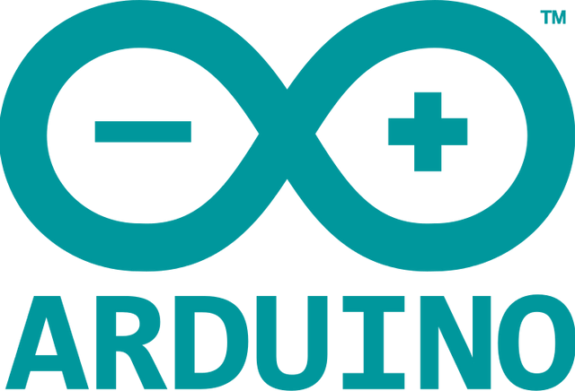

Arduino
Arduino|
Arduino — торговая марка аппаратно-программных средств построения и прототипирования простых систем, моделей и экспериментов в области электроники, автоматики, автоматизации процессов и робототехники.Программная часть состоит из бесплатной программной оболочки (IDE) для написания программ, их компиляции и программирования аппаратуры. Аппаратная часть представляет собой набор смонтированных печатных плат, продающихся как официальным производителем, так и сторонними производителями. Полностью открытая архитектура системы позволяет свободно копировать или дополнять линейку продукции Arduino. Используется как для создания автономных объектов, так и подключения к программному обеспечению через проводные и беспроводные интерфейсы. Подходит для начинающих пользователей с минимальным входным порогом знаний в области разработки электроники и программирования. |
 |
Язык программирования
|
Язык программирования Arduino называется Arduino C и представляет собой язык C++ с фреймворком Wiring, он имеет некоторые отличия по части написания кода, который компилируется и собирается с помощью avr-gcc, с особенностями, облегчающими написание работающей программы — имеется набор библиотек, включающий в себя функции и объекты. При компиляции программы IDE создает временный файл с расширением *.cpp. |

|
Загрузка программы в микроконтроллер
|
Закачка программы в микроконтроллер Arduino происходит через предварительно запрограммированный специальный загрузчик (все микроконтроллеры от Ардуино продаются с этим загрузчиком). Загрузчик создан на основе Atmel AVR Application Note AN109. Загрузчик может работать через интерфейсы RS-232, USB или Ethernet в зависимости от состава периферии конкретной процессорной платы. В некоторых вариантах, таких как Arduino Mini или неофициальной Boarduino, для программирования требуется отдельный переходник. Пользователь может самостоятельно запрограммировать загрузчик в чистый микроконтроллер. Для этого в IDE интегрирована поддержка программатора на основе проекта AVRDude. Поддерживается несколько типов популярных дешёвых программаторов. |
|
Микроконтроллер
Микроконтроллеры для Arduino отличаются наличием предварительно прошитого в них загрузчика (англ. bootloader). С помощью этого загрузчика пользователь загружает свою программу в микроконтроллер без использования традиционных отдельных аппаратных программаторов, хотя в некоторых моделях Arduino его нет. Загрузчик соединяется с компьютером через интерфейс USB (если он есть на плате) или с помощью отдельного переходника UART-USB. Поддержка загрузчика встроена в Arduino IDE и выполняется в один клик мыши.